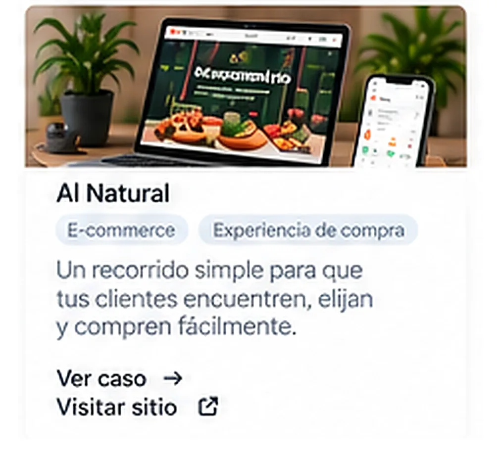

Una experiencia que acompaña al cliente mientras compra.
Diseñamos una experiencia que guía al cliente desde el descubrimiento hasta la compra, mostrando solo lo que puede adquirir en ese momento.
Ver el sitio de Al Natural
Una tienda con muchas opciones, pero decisiones difíciles.
Al Natural tenía diferentes productos disponibles, tanto para vender por su tienda online como desde su local físico con un QR en la mesa.
Presentar todo el catálogo generaba fricción.
Presentar todo el catálogo en una página obligaba al cliente a leer, buscar y decidir qué agregar. Para una compra de despensa, eso genera fricción.
El cliente no tiene que saber qué quiere comprar antes de entrar.
La solución no era hacer una página más larga o mostrar más productos. Era hacer que la página preguntara y guiara al cliente. Creamos un recorrido donde el cliente puede entrar y simplemente decir: “Quiero armar mi despensa.” A partir de ahí, el sistema toma el control.
Vive el recorrido tal como lo vive un cliente real.
Elige cómo llega el cliente (desde la web o ya en el local) y avanza pantalla por pantalla.
Diferentes momentos, una experiencia conectada.
El mismo sistema funciona antes de visitar el establecimiento (explorar, armar la despensa, pedir, recibir) y dentro de él (escanear el QR, consultar, pedir, reservar), y sigue disponible después para volver a comprar o pedir domicilio. No es solamente una tienda en línea: es un recorrido que acompaña al cliente en la web y en el local.
Antes
Explorar · Armar mi despensa · Pedir · Recibir
Durante y después
Consultar · Pedir · Reservar · Domicilio · Volver a comprar
“El catálogo deja de ser una lista y empieza a comportarse como un vendedor que acompaña.”Mi lectura de este caso
Este caso, leído con mi método.
Así se ve Al Natural cuando lo miro como miro cualquier negocio: entender la situación, detectar la fricción, decidir el diseño y conectar personas, procesos y tecnología. Todo lo que aparece aquí sale de lo contado arriba.
Situación inicial
Al Natural tenía diferentes productos disponibles, para vender por su tienda online y desde su local físico, con un QR en la mesa.
Necesidad del cliente
Comprar sin tener que saber de antemano qué quiere: una compra de despensa o un pedido en la mesa, sin leer todo el catálogo.
Recorrido actual
Un catálogo completo en una sola página: el cliente tenía que leer, buscar y decidir qué agregar.
Fricción identificada
Demasiado esfuerzo de decisión para una compra de despensa. No faltaba información: sobraba trabajo.
Decisión de diseño
No hacer una página más larga ni mostrar más productos, sino hacer que la página preguntara y guiara al cliente.
Solución implementada
Un recorrido de pregunta, respuesta, producto, agregar y siguiente pregunta, que muestra solo lo que se puede comprar en ese momento, en la web y en el local.
Personas, procesos y tecnología
- Personas: clientes que llegan desde la web o desde el QR en la mesa del local.
- Procesos: la secuencia de preguntas que reemplaza la lectura del catálogo, y los momentos antes, durante y después: pedir, reservar, domicilio y volver a comprar.
- Tecnología: una web que se comporta como asistente de compra y servicio.
Qué se puede aprender
- Más información no es mejor experiencia: a veces guiar funciona mejor que mostrar más.
- Un mismo sistema puede acompañar a la persona antes, durante y después.
- La unidad de diseño es el recorrido, no la página.
Este caso todavía no incluye cifras medidas. Lo que sí muestra es cómo se pasa de una fricción identificada a una decisión de diseño y a una solución en funcionamiento.
No diseñamos un catálogo para que el cliente lo recorra. Diseñamos un recorrido para que el cliente no tenga que recorrerlo.
Una experiencia digital que acompaña al cliente en diferentes momentos y convierte una página web en un asistente de compra y servicio.
¿Tu negocio necesita algo parecido?
Cuéntame qué quieres que tus clientes puedan hacer sin llamarte. Te respondo en menos de 24 horas.